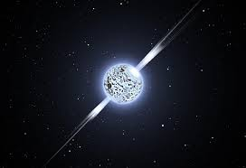

Types Of Objects
Stars
Stars are giant balls of gas that produce light and heat through nuclear fusion.
Planets
Planets are large celestial bodies that orbit stars and have cleared their orbits of debris.
Moons
Moons are natural satellites that orbit planets. Some, like Europa and Titan, may even have underground oceans that could support life.
Asteroids
Asteroids are small, rocky objects that orbit the Sun, mostly found in the asteroid belt between Mars and Jupiter. Some asteroids contain valuable metals and minerals.
Comets
Comets are icy bodies that originate from the outer solar system. When they approach the Sun, their ice vaporizes, creating a glowing tail that stretches across the sky.
Meteors, Meteorites, and Meteoroids
Meteoroids are small space rocks traveling through space. When they enter Earth's atmosphere and burn up, they become meteors (shooting stars). If they survive the journey and land on Earth, they are called meteorites.
Types Of Stars
Main-Sequence Star

Like the sun! The most common star type! Come in different colors and sizes like: red dwarf, yellow dwarf and blue giant.
Red Giant
A dying star that expands! Happens when a star runs out of hydrogen and starts burning helium. Can be hundreds of times bigger than the Sun.
White Dwarf
The leftover core of a dead star! A small, hot, dense remnant of a star like the Sun. Slowly cools over billions of years.
Neutron Star
One of the densest objects in the universe! The collapsed core of a massive star after a supernova. Can spin fast and emit radiation.
Black Hole
A star’s ultimate death! Forms when a massive star collapses completely. Gravity is so strong that even light can’t escape!
Types Of Galaxies
Spiral Galaxies
These galaxies have rotating arms extending from a bright core, filled with young stars. Example: Milky Way.
Elliptical Galaxies
Oval-shaped galaxies with mostly old stars and little gas, making them less active in star formation. Example: Messier 87.
Irregular Galaxies
Chaotic-shaped galaxies with no defined structure, often formed by collisions. Example: Magellanic Clouds.
Lenticular Galaxies
A hybrid between spiral and elliptical galaxies, disk-shaped but lacking spiral arms.
Types Of Moons
Terrestrial Moons
Rocky moons similar to Earth’s crust, mostly found around terrestrial planets. Example: Our Moon.
Volcanic Moons
Highly active moons with volcanoes and lava flows, driven by gravitational forces. Example: Io (Jupiter’s moon).
Icy Moons
Moons with thick ice layers, some hiding subsurface oceans, making them potential homes for alien life. Examples: Europa (Jupiter) and Enceladus (Saturn).
Captured Moons
Asteroids or dwarf planets trapped by a planet’s gravity, often having irregular shapes. Example: Phobos (Mars’s moon).
Shepherd Moons
Small moons that help shape and stabilize planetary rings by controlling ring particles. Example: Pandora (Saturn’s moon).
Types of Nebulae
Emission Nebulae
Glowing clouds of gas energized by nearby stars, producing vibrant colors. Example: Orion Nebula.
Reflection Nebulae
Clouds of dust that reflect starlight but do not emit their own. Often appear blue. Example: Pleiades Nebula.
Dark Nebulae
Dense clouds that block background light, creating dark shapes in space. Example: Horsehead Nebula.
Planetary Nebulae
Shells of gas ejected by dying stars, forming glowing rings. Example: Ring Nebula.
Supernova Remnants

Expanding clouds of gas and dust left after a star explodes. Example: Crab Nebula.